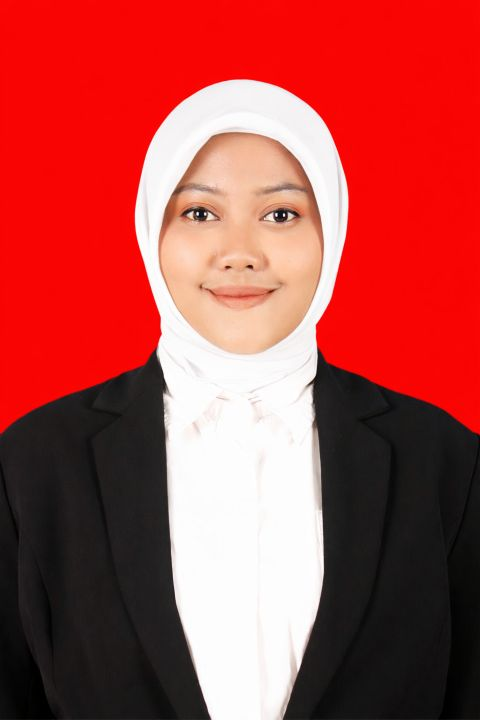

Triputri Nurcahyani, S.Sos.
Calon Guru Profesional • Bidang Studi Broadcasting dan Perfilman
🪪 NIM: 2590554950603
🏛️ LPTK: Universitas Negeri Makassar
🏫 Sekolah PPL: SMK Negeri 2 Makassar
Triputri Nurcahyani, S.Sos.
Calon Guru Profesional • Bidang Studi Broadcasting dan Perfilman
NIM: 2590554950603
LPTK: Universitas Negeri Makassar
Sekolah PPL: SMK Negeri 2 Makassar
triputrinurcahyani77@gmail.com
+62 821-9730-3027
YouTube
Triputri Nurcahyani
Drive Berkas
Folder Asli LK 1 - 4
Pengantar E-Portofolio PPL Mandiri
Selamat datang di E-Portofolio Praktik Pengalaman Lapangan (PPL) Mandiri PPG. Website ini disusun secara terstruktur sebagai wadah dokumentasi akuntabel, reflektif, dan transformatif selama melaksanakan tugas mengajar dan non-mengajar di sekolah mitra. Seluruh tagihan tugas dari LK 3, UTS (Siklus 1), hingga UAS (Siklus 2, 3, dan 4) disajikan secara komprehensif.
Peta Jalan (Roadmap) PPL Mandiri:
Tahap 1
Orientasi & LK 3
Tahap 2 (UTS)
Siklus 1 (Rancangan & Action)
Tahap 3
Siklus 2 & 3 (Inovasi & TaRL)
Tahap 4 (UAS)
Siklus 4 & Evaluasi Total